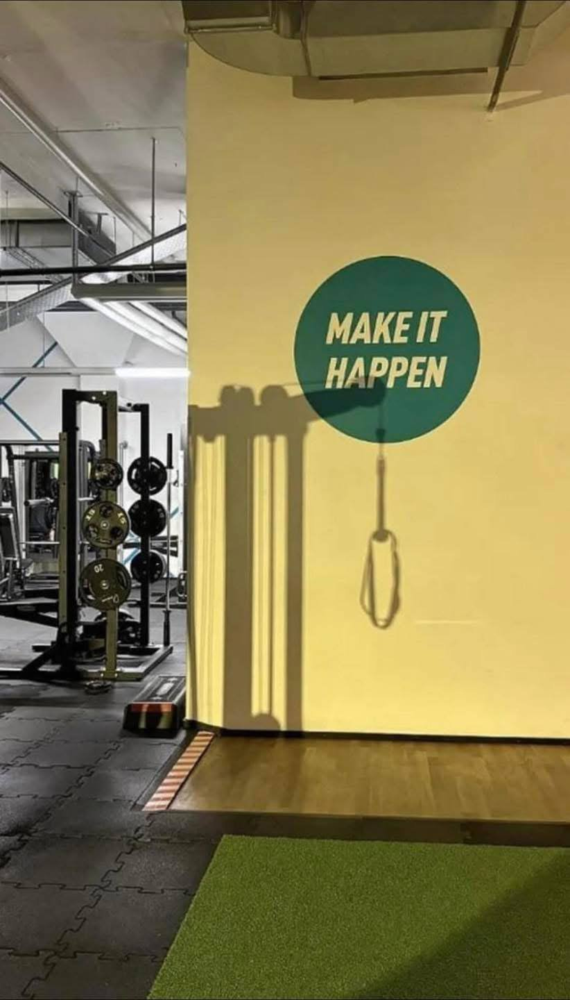
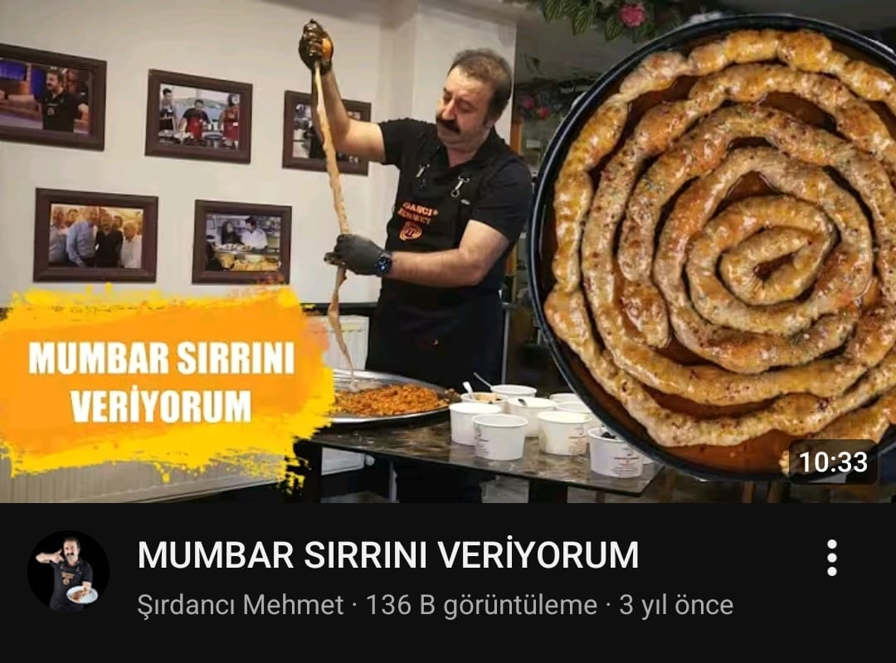
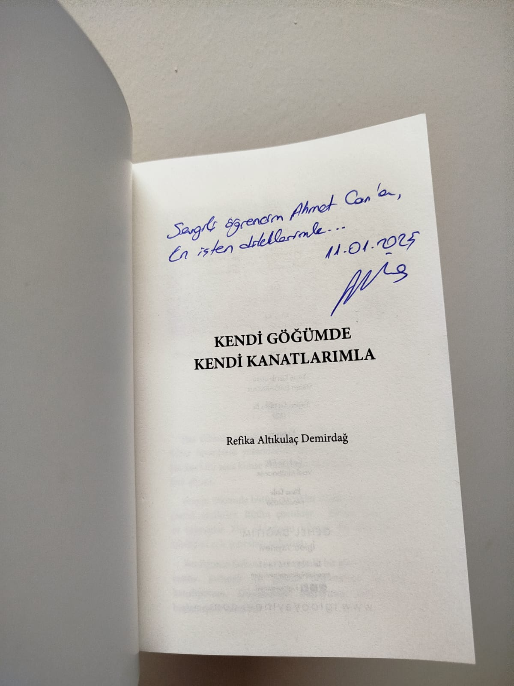
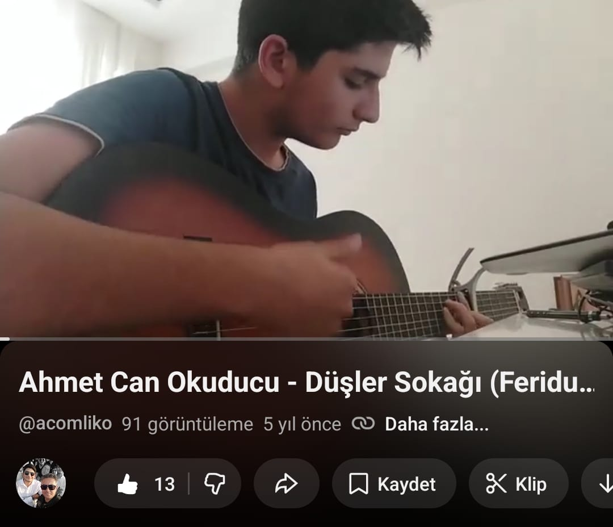
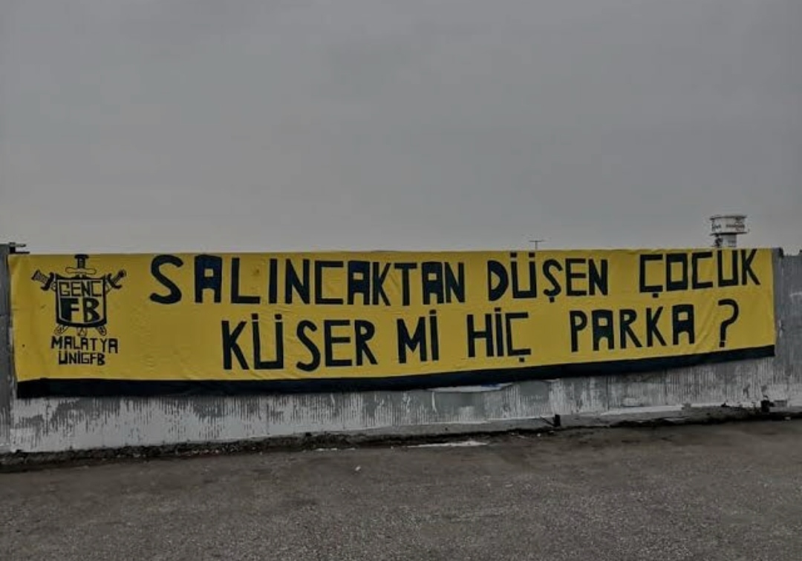
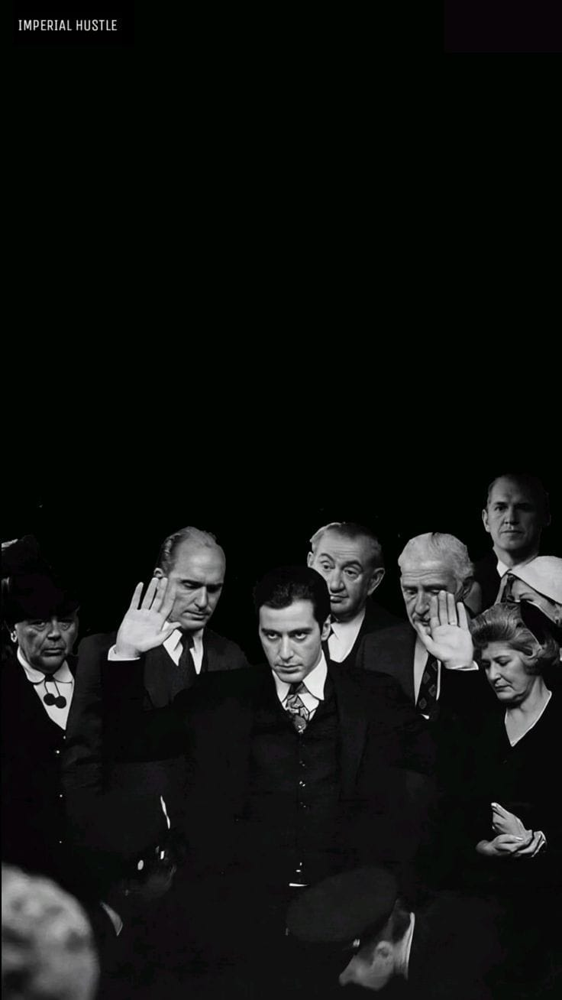

Fitness
Sağlıklı ve disiplinli bir yaşam için sporu ihmal etmiyorum.

Yemek Yapmak
Kafamı dağıtmak için yemek yapmayı seviyorum; sporuma da katkısı oluyor.

Yazı Yazmak
Bazen bir şiir, bazen bir hikaye, bazense bir şarkı...

Müzik
Gerek dinlemek olsun gerek üretmek olsun seviyorum müziği.

Fenerbahçe
Dar ağacında olsak bile son sözümüz Fenerbahçe.

Filmler
Her filmin insana farklı bir pencere açtığına inanıyorum.